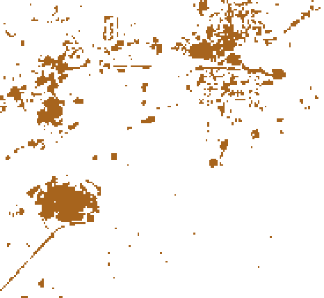
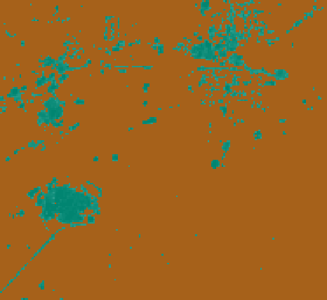
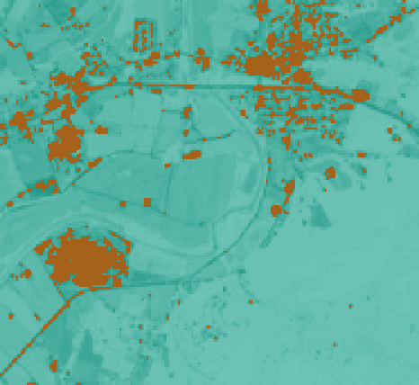

Tile masking¶
Masking is a common operation to use when performing analysis across tiles. Tile masking allows one to compare two tiles, a value tile and a masking tile. The masking tile can be thought of as being placed on top of the other tile, obscuring certain values. Masking cells set to NODATA are opaque, and cells that are anything else are transparent. In this way, value cells that correspond to masking cells that are NODATA become NODATA and value cells corresponding to other values are untouched.
Initial setup:
In [8]:
import astraea.spark.rasterframes._
import geotrellis.raster.io.geotiff.SinglebandGeoTiff
import org.apache.spark.sql._
import geotrellis.raster.{mask => _, _}
import geotrellis.raster.render._
import org.apache.spark.sql.functions._
import astraea.spark.rasterframes.stats.{CellHistogram=>CH}
implicit val spark = SparkSession.builder().
master("local").appName("RasterFrames").
config("spark.ui.enabled", "false").
getOrCreate().
withRasterFrames
def readTiff(name: String): SinglebandGeoTiff = SinglebandGeoTiff(s"../samples/$name")
val filenamePattern = "L8-B%d-Elkton-VA.tiff"
val bandNumbers = 1 to 4
val bandColNames = bandNumbers.map(b ⇒ s"band_$b").toArray
Out[8]:
import astraea.spark.rasterframes._
import geotrellis.raster.io.geotiff.SinglebandGeoTiff
import org.apache.spark.sql._
import geotrellis.raster.{mask=>_, _}
import geotrellis.raster.render._
import org.apache.spark.sql.functions._
import astraea.spark.rasterframes.stats.{CellHistogram=>CH}
spark: org.apache.spark.sql.SparkSession = org.apache.spark.sql.SparkSession@4f8681b5
readTiff: (name: String)geotrellis.raster.io.geotiff.SinglebandGeoTiff
filenamePattern: String = L8-B%d-Elkton-VA.tiff
bandNumbers: scala.collection.immutable.Range.Inclusive = Range(1, 2, 3, 4)
bandColNames: Array[String] = Array(band_1, band_2, band_3, band_4)
In [9]:
val joinedRF = bandNumbers.
map { b ⇒ (b, filenamePattern.format(b)) }.
map { case (b, f) ⇒ (b, readTiff(f)) }.
map { case (b, t) ⇒ t.projectedRaster.toRF(s"band_$b") }.
reduce(_ spatialJoin _)
Out[9]:
joinedRF: astraea.spark.rasterframes.RasterFrame = [spatial_key: struct<col: int, row: int>, band_1: rf_tile ... 3 more fields]
In [3]:
joinedRF.select(cellType($"band_1")).show()
+--------------------------+
|celltypeexpression(band_1)|
+--------------------------+
| uint16raw|
+--------------------------+
Because the tile has a cellType of raw, there is not a NODATA value. One possible solution is to convert the CellType to something that does support NODATA values. This transformation is wrapped into a threshold function that creates a new tile based on whether the cell values in an input tile are higher than a certain number.
In [10]:
val threshold = udf((t: Tile) => {
t.convert(IntConstantNoDataCellType).map(x => if (x > 30000) 1 else NODATA)
} )
Out[10]:
threshold: org.apache.spark.sql.expressions.UserDefinedFunction = UserDefinedFunction(<function1>,org.apache.spark.sql.gt.types.TileUDT@5673d5aa,Some(List(org.apache.spark.sql.gt.types.TileUDT@5673d5aa)))
First, we create a masking tile based on a previous one (in this case, band_1 of the original tiff). This tile is full of either NODATA cells or the unchanged cell values corresponsing to whether the value in the input cell is greater than a threshold.
In [11]:
val withMaskTile = joinedRF.withColumn("maskTile", threshold(joinedRF("band_1"))).asRF
Out[11]:
withMaskTile: astraea.spark.rasterframes.RasterFrame = [spatial_key: struct<col: int, row: int>, band_1: rf_tile ... 4 more fields]
In [ ]:
withMaskTile.select(noDataCells($"maskTile")).show()
Mask¶
Mask is an operation that takes two tiles and eliminates data from one cell that corresponds to a value in the other. For instance, if a cell in the masking tile contains a NODATA, the corresponding cell in the other tile would be set to NODATA. If the masking cell contained anything else, the corresponding cell would have its value untouched. ### Inverse Mask Inverse mask works in the opposite way; It doesn’t touch the cells that are set to NODATA in the masking tile and all other cells become NODATA.
In [15]:
val masked = withMaskTile
.withColumn("masked", mask(joinedRF("band_2"), withMaskTile("maskTile"))).asRF
val inversemasked = withMaskTile
.withColumn("inversemasked", inverseMask(joinedRF("band_2"), withMaskTile("maskTile"))).asRF
<console>:55: error: geotrellis.raster.ProjectedRaster[geotrellis.raster.Tile] does not take parameters
.withColumn("masked", mask(joinedRF("band_2"), withMaskTile("maskTile"))).asRF
^
In [16]:
val maskRaster = masked.toRaster(masked("masked"), 466, 428)
val inverseMaskRaster = inversemasked.toRaster(inversemasked("inversemasked"), 466, 428)
val mask = withMaskTile.toRaster(withMaskTile("maskTile"), 466, 428)
val brownToGreen = ColorRamp(
RGBA(166,97,26,255),
RGBA(223,194,125,255),
RGBA(245,245,245,255),
RGBA(128,205,193,255),
RGBA(1,133,113,255)
).stops(128)
val colors = ColorMap.fromQuantileBreaks(maskRaster.tile.histogramDouble(), brownToGreen)
mask.tile.color(colors).renderPng().write("outputs/mask.png")
maskRaster.tile.color(colors).renderPng().write("outputs/masked.png")
inverseMaskRaster.tile.color(colors).renderPng().write("outputs/invmasked.png")
Out[16]:
maskRaster: geotrellis.raster.ProjectedRaster[geotrellis.raster.Tile] = ProjectedRaster(Raster(CroppedTile(geotrellis.raster.UShortRawArrayTile@35fb8da6,GridBounds(0,0,465,427)),Extent(703986.502389, 4249551.61978, 709549.093643, 4254601.8671)),utm-CS)
inverseMaskRaster: geotrellis.raster.ProjectedRaster[geotrellis.raster.Tile] = ProjectedRaster(Raster(CroppedTile(geotrellis.raster.UShortRawArrayTile@5b2cc14d,GridBounds(0,0,465,427)),Extent(703986.502389, 4249551.61978, 709549.093643, 4254601.8671)),utm-CS)
mask: geotrellis.raster.ProjectedRaster[geotrellis.raster.Tile] = ProjectedRaster(Raster(CroppedTile(IntConstantNoDataArrayTile([I@2e2b65ee,466,428),GridBounds(0,0,465,427)),Extent(703986.502389, 4249551.61978, 709549.093643, 4254601.8671)),utm-CS)
brownToGreen: geotrellis.raster.ren...
| Mask | Masked | Inverse Masked |
|---|---|---|
|  |  |  |